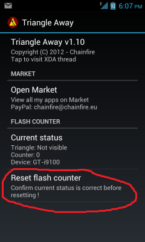

Сбрасываем счетчик кастомных прошивок
Только для устройств с KNOX 1.0!
Наверное все, кто сталкивался с перепрошивкой смартфонов и планшетов компании Samsung, знают, что такое желтый треугольник и тикнутый счетчик прошивок.
Обычно после прошивки кастома и стока, а также получения Root прав у пользователей активизируется счетчик прошивок, и появляется желтый треугольник при включении телефона. И при этом теряется гарантия на девайс.
Всеми известный пользователь Chainfire нашел способ убрать треугольник, оповещающий об установке сторонних прошивок, а также обнулить счетчик таких прошивок. После этого гарантия возвращается к пользователю.
Сейчас мы разберем способ удаления желтого треугольника и обнуления счетчика прошивок.
Требования:
- Смартфон или планшет компании Samsung с KNOX 1.0
- Прошивка на базе Android 4.0 и выше
- Наличие Root прав
- Наличие включенного счетчика прошивок и желтого треугольника.
Приступаем...
2) Открываем программу, обеспечиваем её Root привелегии
3) Нажимаем кнопочку Reset flash counter. Девайс перезагрузится.

На этом процесс сброса счетчика прошивок и удаления желтого треугольника завершен)